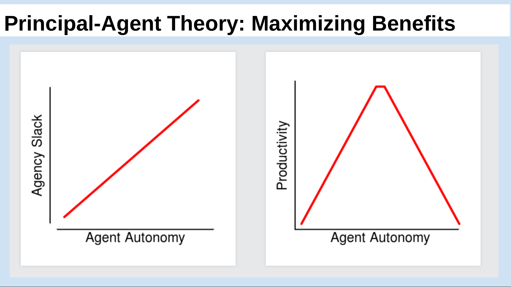
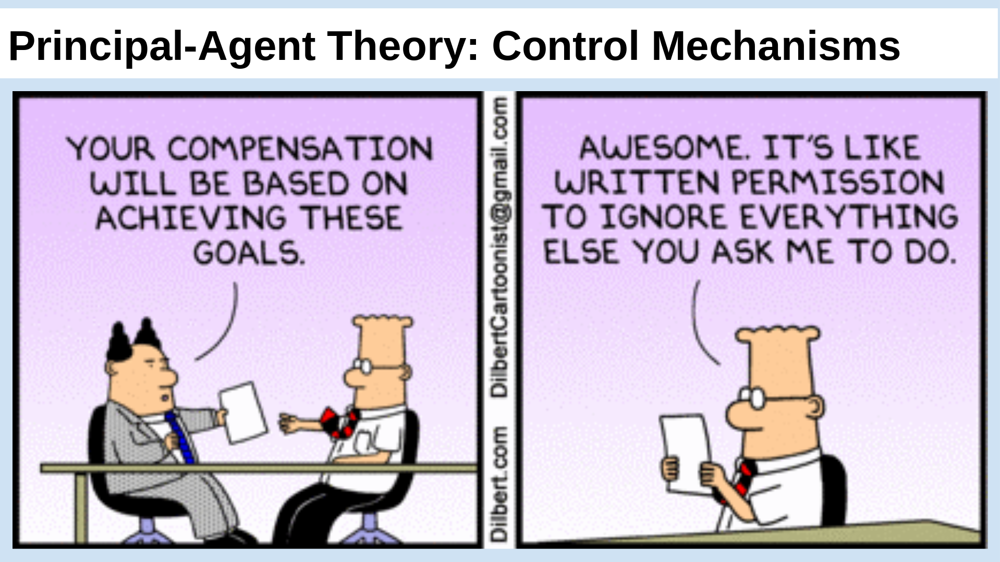
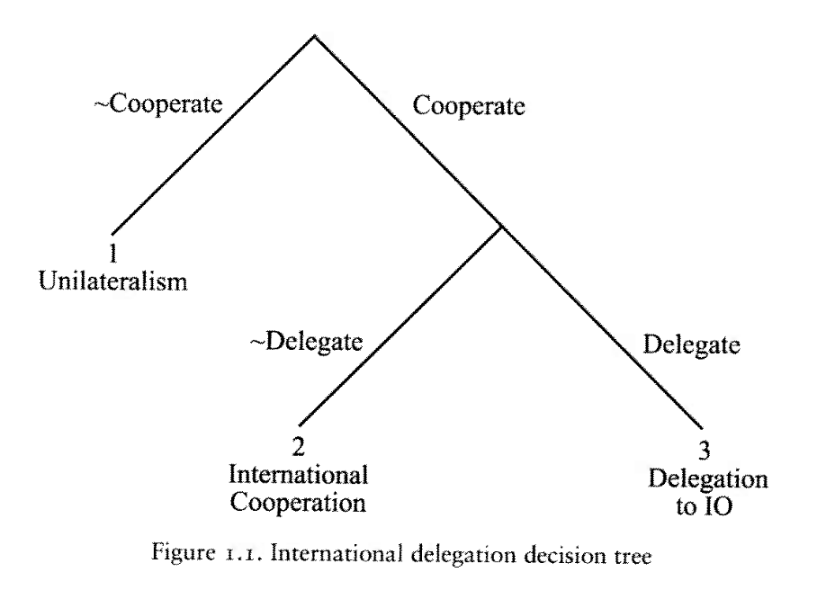
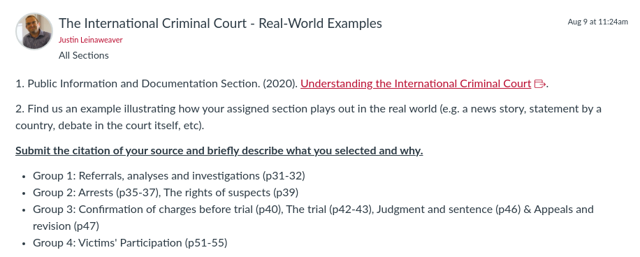

Today’s Agenda
Section 2: How effective have international institutions been in reducing the use of torture by governments around the world?
Principal-Agent Theory
Hawkins, Lake, Nielson & Tierney (2006). “Delegation Under Anarchy: States, international organizations, and principal-agent theory”
Justin Leinaweaver (Fall 2026)
Prep for Class
Review cases submitted to Canvas
Today we add another tool to our toolbox: Principal-Agent Theory
PA Theory is an incredibly useful approach for thinking much more deeply about delegation BOTH at the domestic and the international levels.
SLIDE : But, before we dive into this new material let’s refresh where we ended last week.
How effective have international institutions been in reducing the use of torture by governments around the world?
Week 6: Defining and Measuring the Outcome
Week 7: The Convention Against Torture (CAT)
Week 8: Explaining the Effect of the CAT on Torture
Week 9: The International Criminal Court (ICC)
Week 10: Can the ICC help us reduce global torture?
Week 11: Case Studies of ICC Effectiveness
Has the CAT been effective?
Hathaway (2007) “Why Do Countries Commit to Human Rights Treaties?”
Hollyer & Rosendorff (2011) “Why Do Authoritarian Regimes Sign the Convention Against Torture? Signaling, Domestic Politics and Non-Compliance”
Last week we analyzed the Convention Against Torture (CAT) as an example of an international institution designed for mutual restraint.
Bottom line takeaways?
Has the CAT been an effective tool for restraining states? Why or why not?
[Why would states delegate power to an external agent? ]
Principal-Agent Theory is an attempt to help us understand this rather puzzling question.
Why would a state EVER delegate meaningful powers to an external actor (e.g. agent) outside their sovereign control?
States tend to jealously defend their sovereignty in essentially all scenarios, so this idea is a genuinely challenging one.
Clearly, Realists like Mearsheimer and Waltz would be incredibly dismissive of this
But even institutionalists like the Rational Design team have been pushed to explain the hows, the whys and the “is it meaningful” for cases of delegation in the international arena.
We’ve encountered “delegation” before in our study of international institutions.
How does the legalization article answer this question?
[Why would states delegate power to an external agent? ]
Remember, the Legalization approach investigates delegation in two parts
Dispute resolution and rule-making / implementation
According to this framework, why MIGHT states delegate to an external agent?
This suggests that states look to external agents to make those two tasks easier.
HOWEVER, legalization is a measurement tool, not an argument in favor of greater delegation.
Just because these researchers have designed a ruler that CAN identify significant delegation, doesn’t mean it exists or is likely to!
Within each type of delegation the possible rules run the gamut from hard law, powerful agents to soft law agents with basically no autonomy.
How did the Rational Design literature try to answer this question?
[Why would states delegate power to an external agent? ]
Rational design
Shadow of the future
Transaction costs
Risk aversion
Therefore, states design international institutions to facilitate and strengthen international cooperation (KLS 2001).
Does this help?
How does the KLS argument answer our question about why states delegate to an external agent?
In a sense, each of these suggests the conditions under which a significant act of delegation may be appealing
Rational design
States and other international actors, acting for self-interested reasons, design institutions purposefully to advance their joint interests.
IFF an agent facilitates joint interests, it MAY be worth the risk
Shadow of the future
The value of future gains is strong enough to support a cooperative arrangement.
IFF an agent’s existence helps to extend the likelihood of cooperation over the long-term, it MAY be worth the risk
Transaction costs
Establishing and participating in international institutions is costly.
IFF an agent can mitigate the costs of running an institution, it MAY be worth the risk
Risk aversion
States are risk-averse and worry about possible adverse effects when creating or modifying international institutions.
IFF an agent can mitigate the risks of running an institution, it MAY be worth the risk
Does this make sense?
This comes a lot closer to offering us an answer to our question.
HOWEVER, it simply opens up the possibility without helping us think through the implications of delegation as a design choice.
Your reading for today from Hawkins, Lake, Nielson and Tierney (2006) is meant to do just that.
How do the authors in today’s reading define delegation?
[PA Theory: Why Delegate? ]
“Delegation is a conditional grant of authority from a principal to an agent that empowers the latter to act on behalf of the former” (Hawkins et al 2006, 4).
The definition itself is quite simple which helps keep it focused
Unlike legalization this does not tie delegation to only specific tasks (rule making, dispute resolution)
The conditions of delegation proposed here as part of the definition are how we start to answer the big question: Why delegate to an external agent?
Explain these four definitional criteria to me in terms of why a state would insist on this as part of any principal-agent relationship.
(An explicit contract makes the exact limits and expectations of the relationship clear for all parties)
(Limited in time or scope means the power transfer is expressly limited from the beginning)
(Revocable agency means the agent can be fired)
The power transfer is NOT permanent
(The agent is only an agent, with all rights and privileges attached, so long as it works for the principal under the terms the principal has elaborated)
Not really an independent actor at all
SLIDE : According to the reading, there are six benefits to delegation for the principal
[Hawkins et al (2006): The Benefits of Delegation ]
Divide the labor & create gains from specialization
Managing policy externalities
Facilitating collective decision-making
Resolving disputes
Enhancing credibility
Creating policy bias
SMALL GROUPS: Go through this list with the case study you brought to class in mind.
Get ready to introduce your case to us as an example of one or more of these benefits in action.
Questions on the assignment?
Ok, what is the first benefit of delegating to an IO?
Notes
(1. Divide the labor and create gains from specialization)
frequent, repetitive tasks that require specific knowledge benefit from being delegated, agent gets better at them over time
Create a specialized agent (ICC, World Bank, IMF)
(2. Managing policy externalities)
Coordinating agent: coordination games (chicken game) the policy outcome doesn’t matter as long as everyone does the same thing. Let the agent dictate.
Collaboration agents: collaboration games (PD): States want to defect, delegate to an agent to provide the good for you or to monitor and publicize bad behavior. CoE monitors human rights.
Coordinating agent (International Postal Union)
Collaboration agents (CoE, OECD, IAEA)
(3. Facilitating collective decision-making)
Agenda-setting Agent: Agent with agenda setting power can help states get past vote cycling problems or other preference instabilities
Basics of vote cycling: No condorcet winner (an option that beats all others in pairwise competition).
agenda-setting agent (European Commission)
(4. Resolving disputes)
Arbitrating agent: Incomplete contracting has lower future transaction costs if you create an arbitrating agent.
Problems arise from incomplete contracting.
Arrange careful rules so states can give the IO the authority AND autonomy to handle these unplanned for events.
Arbitrating agents
(5. Enhancing credibility)
Enforcing agents: with high discretion to push policy in the direction desired over the long-term. Makes it hard for states to cheat to grab short-term gains.
time-inconsistency problem (long-term interests may not be same as short-term interests)
Delegating authority to an IO is a demonstrable action that ties a state’s hands more than simple talk.
Enforcing agents (ECB)
(6. Creating policy bias)
Create lock-in with policy-biased agents
Try to set the rules of behavior of the IO so that your power is protected even if the balance shifts over time.
e.g. Post civil war create institutions with voting rules balanced across ethnic groups
Policy creates winners and losers. Ensure your preferences remain in place long after you’re gone.
UNSC structure reflected power dynamics in 1945 but keeps them central today
Delegation can provide substantial benefits to a principal.
So, why not delegate when it promises to provide benefits?
Because those benefits depend on minimizing agent slack
According to the reading, what is agency slack?
(p5; “…independent action by an agent that is undesired by the principal.”)
The chapter defines two types of “slack.”
1. What is “shirking” and give me an example from your work lives?
2. What is slippage and give me an example?
Everybody clear on those forms of agency loss?

Now that we have the basic concepts down…
Explain to me what we’re seeing in these two figures.
The primary benefit of delegation is in specialization.
The agent gets really good at doing the job and you benefit.
The problem is that specialization only pays off if you give the agent the freedom to do the job.
As the agent’s autonomy increases, the capacity for slack increases and eventually the agent’s productivity collapses.
The challenge for the principal is to design a contract that maximizes productivity while minimizing slack.
Does this make sense?

So, the question for us is how do you control your agents with good design?
SLIDE : According to the reading there are five major mechanisms states use to control their agents
[Principal-Agent Theory: Control Mechanisms ]
Rules vs Discretion
Monitoring and Reporting Requirements
Screening and Selection Procedures
Institutional Checks and Balances
Sanctions
GROUPS back to your cases!
Questions on the assignment?
Ok, how does the first control mechanism work?
Who has an example of an IO illustrating this control mechanism in action?
REPEAT for EACH
Notes
Rules vs Discretion
How extensive and specific will the rules be for agent task execution?
Entirely rule-based is inefficient and only needed when agent is difficult to control through other means (Ex: World Bank and the environment)
Total discretion is better when uncertainty is very high, agent possesses important specialized knowledge or in cases of preference heterogeneity, BUT, trade-off is greater chance of slack.
Monitoring and Reporting Requirements
“ex post” monitoring
“police patrol” is direct monitoring of agent by principals
“fire alarm” relies upon affected outside actors to make principals aware of a problem
Screening and Selection Procedures
Carefully pick agents whose preferences match your own.
Of course, agents have an incentive to misrepresent their preferences…
Institutional Checks and Balances
Design internal, conflicting authorities (UNSC can stop ICC)
empower more than one agent with overlapping authorities
Sanctions
Carrots and sticks
Increase or decrease budgets, perks, staff, degree of oversight
Control mechanisms are costly and imperfect

Any questions on the PA Theory introduced in chapter 1 of today’s reading?
I really like Figure 1.1 in the chapter as a visual representation of the delegation outcome.
The figure shows us the alternatives to delegation
At node 1, the top, states must decide if they want to cooperate or not
e.g. per Keohane, mutual policy adjustment
At node 2, if they decide to cooperate, but not delegate we have standard international cooperation
e.g. states adjust policy through domestic laws or regulations
Alternatively, states may choose international cooperation through delegation
e.g. power to implement policy is given externally
The authors point out that thinking about “why delegate?” requires considering the real alternatives to it (e.g. unilateralism vs standard cooperation with domestic implementation)
Without considering the “next best alternative” it can be hard to understand the delegation choice!
Make sense?
Next Class

Next class we take PA Theory back to our study of institutions for mutual restraint.
Specifically, we begin an analysis of the International Criminal Court (ICC).
I want everyone to read “Understanding the ICC” document
Each of you will be assigned to a group and each group will be tasked with finding us real-world examples of one of these important roles fulfilled by the ICC.
I’ll send out an announcement of which group you are in after class.
Any questions on the assignment?